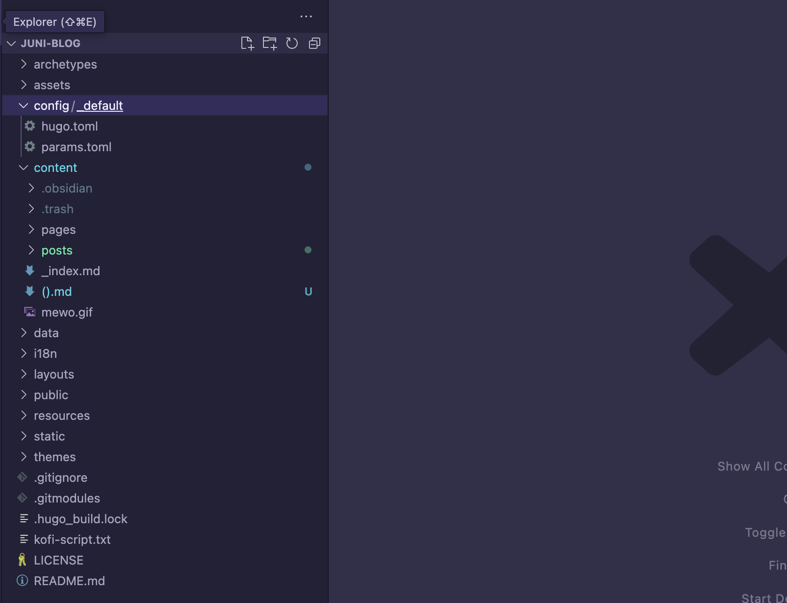

building & deploying this blog with hugo!
Table of Contents
and now - to the story of how this blog was born!
(it’s nothing special, but I thought I’d document it for myself when i inevitably forget how i did it in the future, as well as any other wandering lost souls out there!)
i’ve been meaning to re-jig my tech blog for a while now. for the last year and a bit, I experimented with the static site generator (SSG) jekyll. jekyll is essentially a tool built in ruby that combines blog posts (typically written in markdown, .md files) with themes/config files to generate browser-renderable code (HTML, CSS and JS).
this way, you can streamline your workflow, embed all sorts of cool features (comments, reactions, reading times, table of contents, automatic rss feeds, post dating etc.), and most importantly avoid the horror of writing blog posts in raw HTML… but still being able to dabble in it when you please (providing your markdown-to-html renderer permits that).

…and all of this within a static site (all files pre-built on web-server, no databases) that is lightweight, responsive, maintainable and (relatively) quick to spin up.
- why did i move away from jekyll?
for three simple reasons:
- i’d been meaning to try the SSG hugo.
- hugo is built in golang, and i’d been wanting to poke around with go for a while now.
- i found (and confirmed, after trying hugo) ruby & jekyll to be a bit more onerous to work with & overly-verbose in both site layout & base code. also - i noticed that jekyll had much slower build times.
- getting up and running with hugo:
there are endless tutorials for this, and my pipeline is probably most similar to that of NetworkChuck in the recent video he released (not even a week before I went in on my own build, after sitting on the idea for ages haha - twas kinda spoopy :3).
- setting up the hugo site:
-
Hugo has two simple dependencies:
git(for code version control), and thegocompiler toolchain. (here are where you can installgitandgo, if needed) -
after installing these, using the package manager of your choice (for me,
homebrew), install hugo withbrew install hugo. -
choose a directory for your site, and open it in your code editor. ensure hugo is in your system PATH so you can access it via the command line, and run
hugo -vto ensure you’re on the latest. -
then simply run
hugo new site [SITENAME], replacing[SITENAME]with whatever you’d like to call the site (& folder it lives in). hugo will then spinup the basic bones of your site, and navigate into the folder it creates withcd. -
initialise an empty git repository in this new folder with
git init. -
to install a theme, browse them here, and follow the instructions in the theme’s description (as some methods vary). however, the most common is installation is via a git submodule - which essentially will just pull down an existing git repo containing a pre-built hugo theme, and populate your site’s
themesfolder with it. this way, when building your site, hugo will use it as a base layout, and add any changes made to your site on top of it. for me, i ran:git submodule add https://github.com/michaelneuper/hugo-texify3.git themes/hugo-texify3 -
now, your site’s directory tree should look something like the following:

Folders & files are fairly self-explanatory, with the main ones being:
hugo.toml- your site’s configuration variables./content- where you create folders to store blog posts (.md) & site pages/assets- ideally where media is stored & linked (although you can place them anywhere, theoretically, providing you link back to it correctly)/public(only created when website is built, see step 8.) - where your raw website (raw HTML, CSS, JS) will be built to and live. you shouldn’t need to touch this folder./themes- where all of your sites themes are installed (and specified/switched between inhugo.toml)
-
sometimes, themes require installing other tools as part of their custom build process. this should be specified in the theme’s documentation. for me, that required needing to install the following with
npm:npm install postcss-cli autoprefixer postcss-import -
to build your site locally, ensure you’re in your site’s base directory and run
hugo server -t [THEME-NAME](if using a theme). for me:hugo server -t hugo-texify3
-
now, navigate to the local address to see your site in action! it should live-reload as you make changes in your code editor.
-
[EXTRA] after analysing my specific theme’s layout & directory structure, I mirrored elements of it (thus overwriting what was contained in the
/themesfolder) to create the below folder structure, allowing me to: - add dedicated website pages in/pages- use/poststo hold my site post, with each in its own folder alongside any assets (images, media, etc.). this was done due to my particular workflow (writing in obsidian, see below). - split site configuration into two files for readability in/config: one for parameters (enabling/disabling certain features like social links, metadata etc.), and one for overall config & layout. 
- pushing to remote git repository & deploying via cloudflare pages
(aka my weird custom workflow):
-
after running
git init, ensure you are authenticated locally withgh auth login(requires use of Github CLI, install withbrew install ghor similar) -
create a new repository on GitHub with:
gh repo create juni-blog --public --source=. --remote=origin--public: sets repo as public, as cloudflare will need to monitor it for changes--source=.: initialises the remote repository with your current local directory’s contents--remote=origin: sets up the remote URL for the repository
-
now, just push the local branch to the remote with
git push -u origin main.The
-u(or--set-upstream) option ingit pushlinks your local branch (main) to the remote branch (origin) by default, allowing you to rungit pushandgit pullcommands in the future without addingorigin mainat the end (AKA specifying which remote branch to interact with by default). -
navigate to your remote repository on github to check whether the changes have been propagated!
-
setup, login to and open cloudflare pages and navigate to your
Workers & Pagessection, thenCreateto deploy a new “site”. The clickConnect to Gitand follow the prompts to authenticate, and link to the repository that you just pushed to.

After that, you can specify which branch Cloudflare should look for changes on, as any frameworks that you’re using to build & deploy the site, and where the built assets & HTML files are stored. I selected
Hugo(for obvious reasons), and it populated the build command with a simplehugo.However, if your site requires other tools as part of the build process like mine (specified in step 8 in the previous section), be sure to install them on the remote server this site is running off with the relevant commands. for me, these are:
npm install postcss-cli autoprefixer postcss-import && hugoCloudflare should provide logs from the remote server should your build fail, making troubleshooting fairly simple.
-
then you’re all set! cloudflare will now watch for any changes made to the specified branch of this repo (for me,
main), and if detected, it will automatically runnpm install postcss-cli autoprefixer postcss-import && hugoon its remote server(s) to build the updated version of my site, and then serve only the created HTML, CSS & JS files in the specified output directory (for me,public). you should be able to access your site from the default URL created and provided to you, like https://b3ce9f44.juni-blog.pages.dev/. -
[extra] to change this URL to a custom domain that you own, go to the
Custom Domainsection of the page you just created, click Set up a custom domain.
Then, follow the prompts. In my case, I associated the
myblogCNAME with this “Page” (juni-blog.pages.dev).
Then, simply navigate to your domain’s (
juni-mp4.com) DNS records (for me, also managed via Cloudflare) and add a record for the CNAME you just specified.
This means that when someone visits
myblog.juni-mp4.com, they will functionally be visitingjuni-blog.pages.dev.
this combination of github & cloudflare pages allows me to easily host & deploy sites from different github repos, each built with all kinds of different build methods (from hand-coding raw HTML/CSS/JS to using various SSGs like jekyll, hugo etc.), as subdomains of my primary domain juni-mp4.com and all served securely & quickly from Cloudflare’s worldwide array of web servers. (not sponsored haha - the only thing you monetarily pay for is your domain registration fee, and even that is optional.)
Side note: yes, whilst you could argue that you “pay” in the form of you & your content being technically in the hands of cloudflare, outside of hosting file files yourself on a VPS or a home server - which comes with a slew of additional overhead, maintenance and security configuration concerns - this is a fairly reasonable compensation to make for the uptime, security & responsiveness that Cloudflare’s network of servers provides, at least imho and for my use case.
this very particular workflow & need for flexibility is why i chose to use cloudflare instead of just deploying straight from Github Pages.
- my final note-taking process: an overview
-
open my Obsidian “blog” vault, and create a new note within a folder in
posts:
the Templater plugin auto-generates the hugo-formatted frontmatter you see above in every new note, using the code block below inside the
templatefile.--- title: "" date: <% tp.file.creation_date("YYYY-MM-DD") %> description: "" toc: true math: true draft: true categories: tags: --- -
write the post :3. drag & drop / copy-paste images as needed, after making sure the
Absolute path in vaultoption is selected in your vault’s Files and links settings. This may need to be tweaked depending on your site’s layout later, but it worked for me, and is easily changed in bulk in VSCode or a similar editor via find & replace.
-
once I’m finished writing, I switch to my full website directory tree in VSCode (my Obsidian “blog” vault is just the website’s
contentfolder, hence the.obsidianfolder inside it).
i run the build command
hugo server -t [theme-name-here]in the VScode terminal to start a live server, and visithttp://localhost:1313/to double check that the changes have been formatted properly.
-
then a simple
git commit -m "new blog post: hugo site build" -a && git push origin mainpushes the changes to my site where it’s rebuilt & served as new HTML pages!